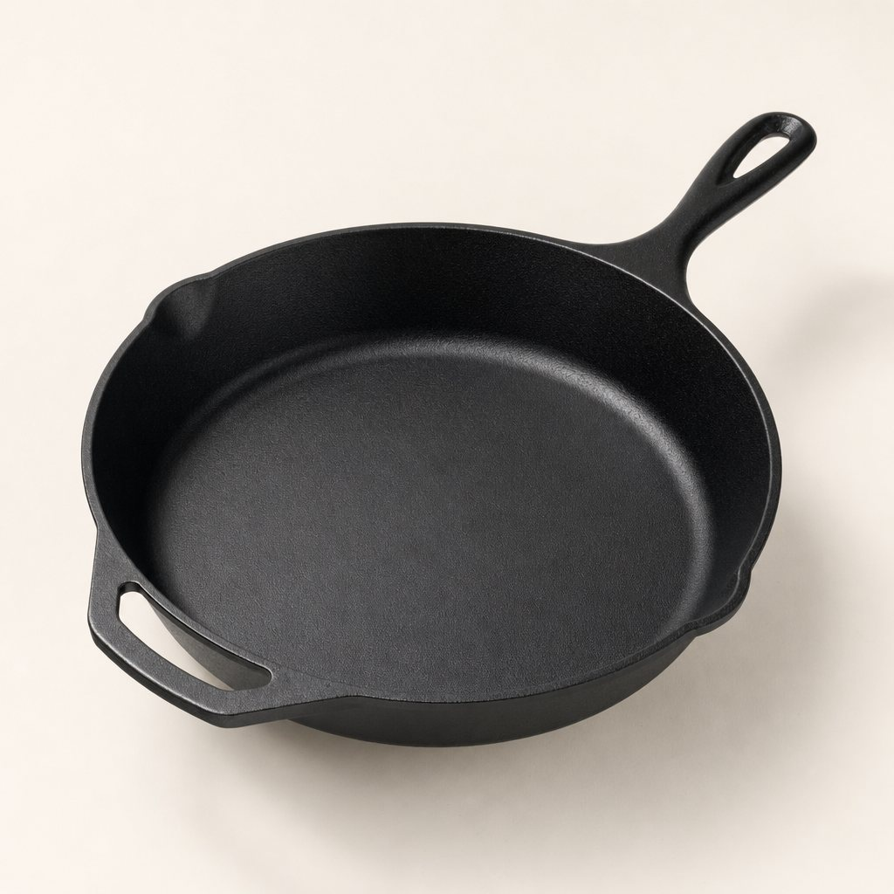

The Skillet — 10-inch, $95

Add to cart Free US shipping · Ships in 2 business days
What it is
A 10-inch cast-iron skillet, cast in one piece from recycled iron and seasoned by hand with flaxseed oil before it leaves us. It's the pan you'll use most days: it sears, sautés, fries, bakes, and roasts, and it moves from stovetop to oven to open fire without a second thought. Cast iron holds heat evenly and stays hot when food hits it, which is exactly why a $95 skillet gives you a better sear than most pans at any price.
The cook surface is ground smooth — not the pebbly texture some cast iron ships with — so it releases food cleanly once it's up to temperature. It's the daily driver of our whole line (if you cook for a crowd, see the 12-inch Big Skillet), and if you buy one thing from us, buy this.
Specs
| Diameter | 10 inches |
|---|---|
| Material | Recycled cast iron, single-piece cast |
| Seasoning | Hand-seasoned with flaxseed oil, ready to cook out of the box |
| Pour spouts | Two, on both sides, for right- and left-handed pouring of fat or pan sauce |
| Handle | Long cast handle with a helper hole; the tip runs cooler than the body but is not fully stay-cool — use a mitt when it's been in the oven |
| Weight | About 4.5 lb |
| Price | $95 |
| Warranty | Lifetime guarantee, free re-seasoning forever |
Why $95 is worth it
You can buy a cast-iron skillet for a lot less. We know the big-box pans are genuinely fine, and we won't pretend otherwise. Here's the honest difference: ours ships with a smooth, ground cook surface instead of a rough sand-cast one, it's seasoned by hand rather than sprayed, and it's backed by a lifetime guarantee with free re-seasoning for as long as you own it. If a cheap pan and ours both last forever, the extra you pay here buys a better surface, a better handle, and a company that will fix the pan instead of shrugging.
And run the math against the pans most people actually buy — the nonstick ones that get replaced every year or two. Ten years of those costs more than this skillet, and this skillet will still be going in year thirty. We would genuinely rather you buy once than replace yearly.
Will it work on my stove? (and other worries)
Induction: Yes. Cast iron is magnetic, so it works on induction, gas, electric, and ceramic — everything. On induction it heats fast, so start lower than you think.
Oven and campfire: No temperature limit that matters in a kitchen. It goes in the oven, under the broiler, and straight onto a campfire grate. There's no plastic and no coating to worry about.
"Am I afraid of rust?" Rust is the fear we hear most, and it's overblown. Rust happens when a pan sits wet. Dry it after washing, wipe a little oil around, and it simply won't rust. If it ever does — you left it in the sink, someone ran it through the dishwasher — it is not ruined. A little scrub with the chainmail from our Care Kit and a re-season brings it right back. Or send it to us and we'll do it free.
"Is the maintenance a burden?" After cooking: wipe it out, rinse with hot water, dry it, wipe on a thin film of oil. Thirty seconds. You don't soak it, you don't scrub it raw, and yes, a little soap is fine on modern seasoning. It's less fuss than people expect.
"Is it too heavy?" It's about 4.5 lb — heavier than nonstick, lighter than the Dutch oven. The weight is doing work: it's what holds heat for a good sear. If you have wrist or grip trouble, use the helper hole and two hands, and know the 10-inch is our lightest pan.
A good gift?
It's our most-gifted item, especially in the winter. A skillet is a present someone opens once and uses for decades, which is about the best thing a gift can be. If you're buying for a new cook, this pan plus the Care Kit is a complete starter set. Add a note at checkout and we'll leave the price off the packing slip.
Care & use
Cook, wipe, rinse hot, dry, oil — that's the whole routine. Full details on the care page.
Guaranteed for life
If this skillet ever fails you, we repair or replace it — free. Re-seasoning is free forever, too. Read the details on our guarantee. Still deciding on cast iron in general? See why cast iron.